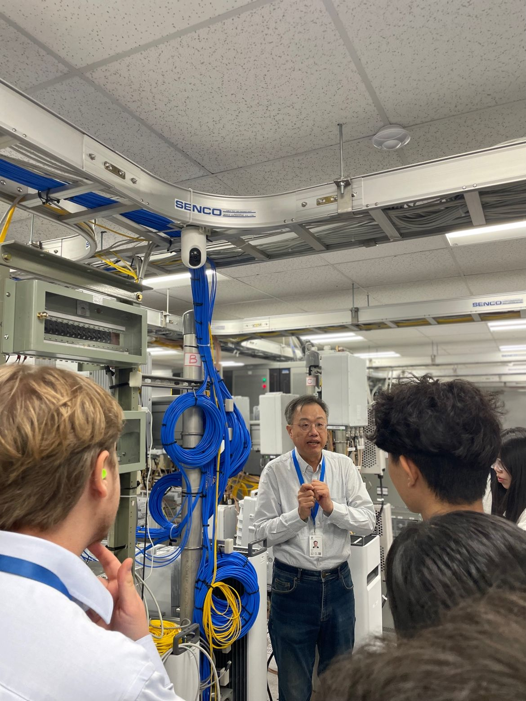
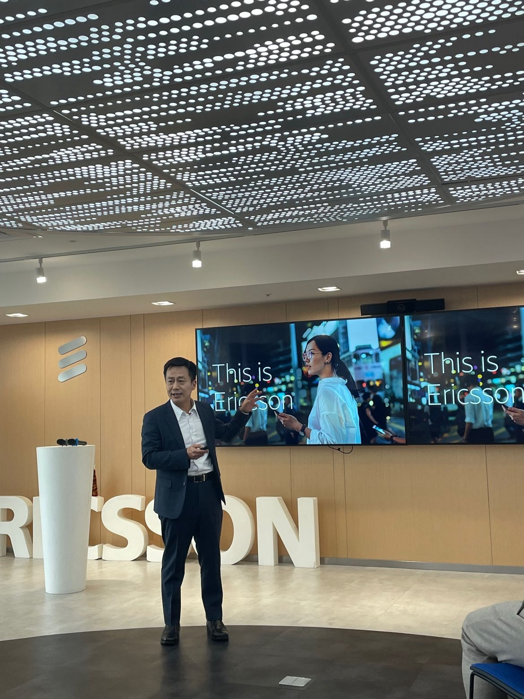

.jpeg)
Leading with Connection: Bridging Young Talent with Industry at Ericsson Taiwan

As part of his tenure as Vice-Chair of the Young Professionals community at the Swedish Chamber of Commerce Taipei (SCCT), Rurik played a central role in organizing and leading a high-impact study visit to Ericsson’s Taipei office. The initiative aimed to deepen participants’ understanding of Taiwan’s technology landscape while creating meaningful opportunities for cross-cultural dialogue and professional development.
With a focus on industry innovation and international engagement, RURIK worked closely with Emily Wang, Head of Marketing at Ericsson Taiwan, to organize a visit that would leave a lasting impression.
The visit brought together a diverse group of young professionals who were given rare access to Ericsson’s leadership team—including CEO David Chou, CTO Dan Yao, Head of People Lewis Kuo, and Karena Fu from the marketing department—for an in-depth look at the company’s operations, values, and strategic direction.
The agenda covered a wide range of timely and relevant topics, from 5G development and sustainability initiatives to Ericsson’s global corporate values and inclusive work culture.
Particular attention was given to their industry-leading 98% product recycling rate and their efforts to promote open dialogue in a traditionally high power-distance cultural setting—an aspect that resonated deeply with the visiting group.
Rurik’s involvement spanned the full lifecycle of the initiative: from initial outreach and stakeholder coordination to on-the-ground hosting and engagement during the visit.
His ability to bridge organizational goals with participant experience helped ensure the event wasn’t just informative, but also personally impactful for those involved. Attendees described the experience as “fantastic,” “enriching,” and “eye-opening.” According to the follow-up feedback collected by the Young Professional's board, the structured flow, quality of interaction, and accessibility of Ericsson’s team left a lasting impression. Testimonials highlighted both the technical insights and the cultural reflections that emerged during the event—echoing the very goals RURIK set out to achieve in his leadership role with SCCT Young Professionals.
This initiative stands as a testament to his commitment to international collaboration, professional development, and human-centered leadership. Through initiatives like this, he continues to create opportunities where knowledge is shared, curiosity is nurtured, and lasting professional connections are formed across borders.
GALLERY

.jpeg)
.jpeg)
.jpeg)
.jpeg)
